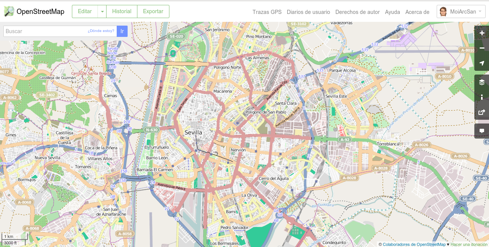
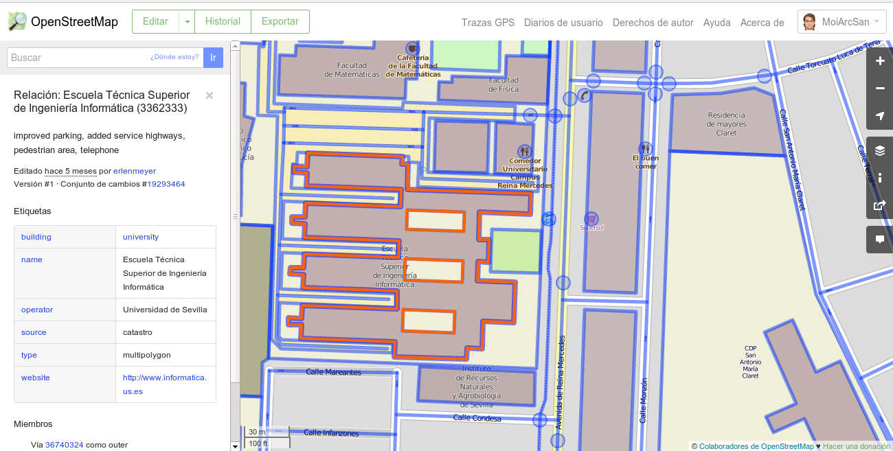
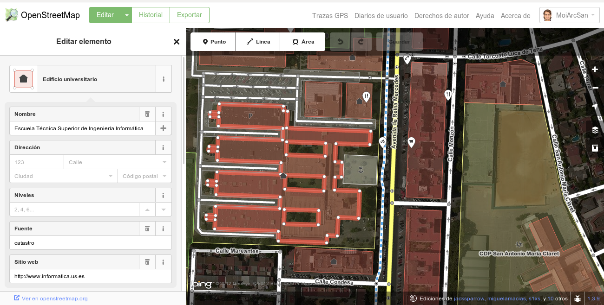
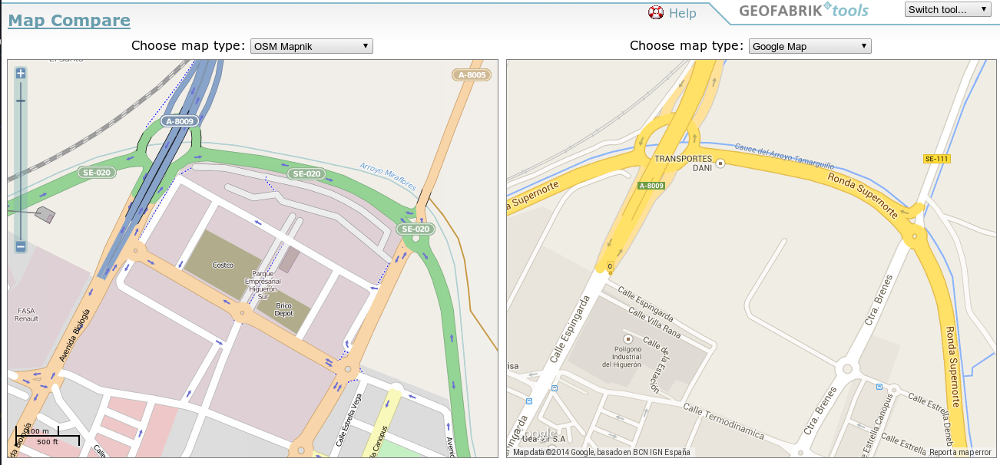
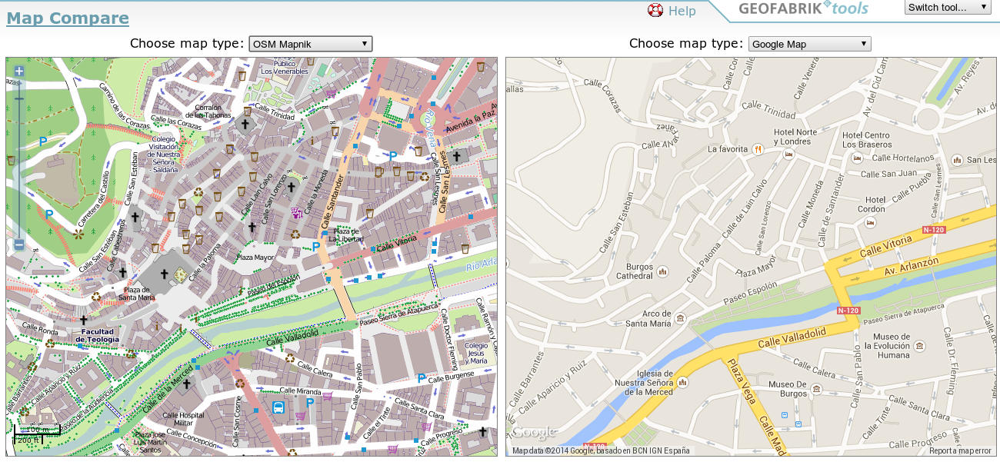
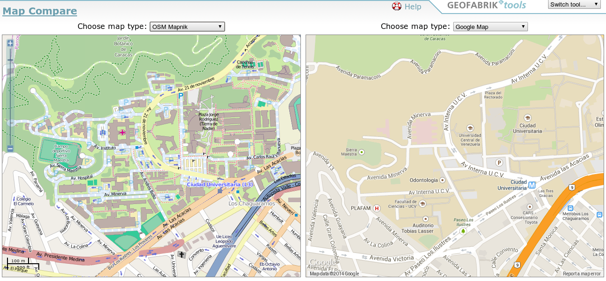
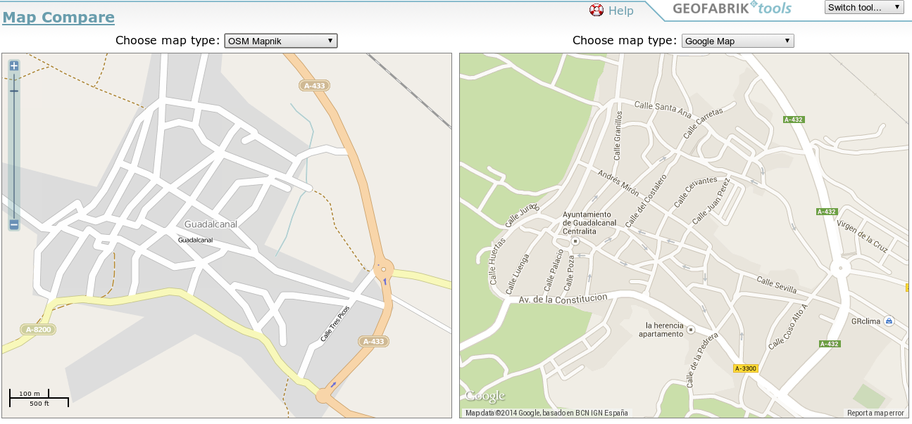
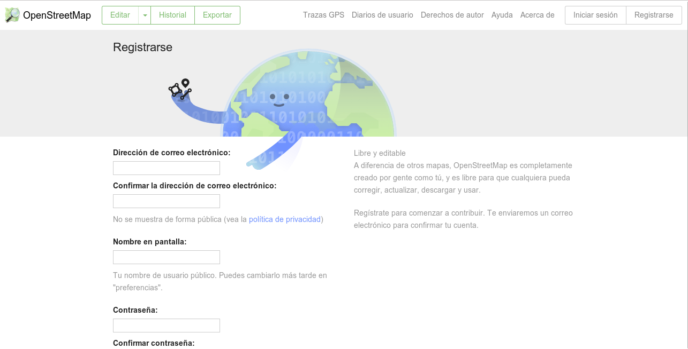
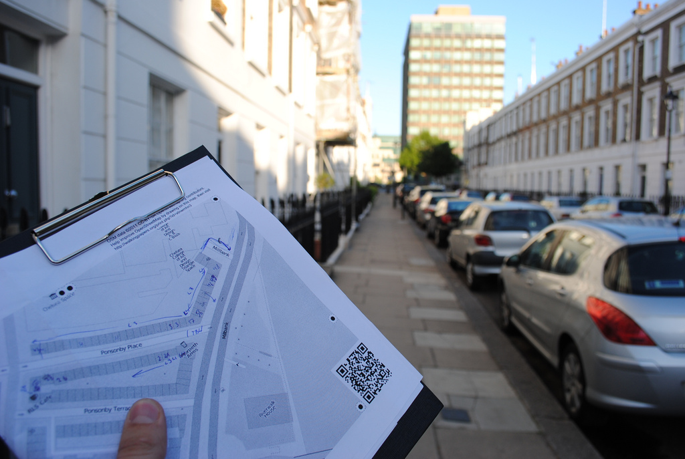

OpenStreetMap
el concepto de Mapping Party
Geoinquietos Sevilla
¿Geoinquietos Sevilla?
- Encuentros locales informales
- Compartimos conocimientos
- Organizamos charlas
- Divulgamos Software Libre
¿Dónde encontrarnos?
- Lista de correo
- Wiki
- Blog
http://lists.osgeo.org/mailman/listinfo/sevilla
sevilla.geoinquietos.org
http://geoinquietos.blogspot.com.es
@geoinquietossvq
Introducción
Información es poder
Mayor calidad --> Mejor toma de decisiones
Mapa = información visual
Mapa ayuda a tomar decisiones
Introducción
Vamos a dibujar
Papel y boli
Piensa en tu pueblo
¿Qué dibujarias?
Introducción
Tu mapa está limitado
- Sólo tiene sentido para tí
- Complicado llevar a otras personas
- Formato papel
Se queda en un trozo de papel
Introducción
OpenStreetMap
- Crear + Compartir información
- Cualquiera puede contribuir
- Formato digital --> en la nube
- Información
- Accesible por todo el mundo
- Totalmente gratis
- De uso libre
Motivación
Objetivo + Razón
- Información pública --> ¿Uso libre?
- Licencias de datos
- Propiedad de la inforamción
Motivación
Información pública
Se paga dos veces
- Por generarla --> Impuestos
- Por obtenerla --> Precio
Motivación
Licencia de datos
Muy limitadoras
- Corregir errores --> NO
- Añadir nuevos datos --> NO
- Uso de los datos --> limitados
Motivación
Propiedad de la información
OSM vs MapMarker vs MapShare
- OSM --> Propiedad libre
- MapMarker --> Propiedad Google
- MapShare --> Propiedad Tomtom
Qué es OSM
Wikipedia de los mapas
Proyecto para crear un mapa colaborativo mundial
- OpenData
- Información geográfica
- Ecosistema de productos y servicios
Qué es OSM
Ver
Qué es OSM
Consultar
Qué es OSM
Editar
Qué es OSM
Si ya tenemos Google Maps
2 motivos principales
- API restrictiva + publicidad
- Información propiedad de Google
Qué es OSM
Licencia
ODBL
- Uso libre --> Atribución
- Respetar licencia abierta
Comparemos
Sevilla
Comparemos
Burgos
Comparemos
Venezuela
Comparemos
Guadalcanal
Colaborar
Registrarse
Colaborar
Flujo de trabajo
- Recolectar
- Editar
- Renderizar
Mapping Party
Distribución
- Recolección de datos
- Volcado de datos
- Visualización de los resultados
Mapping Party
Recolección de los datos
- GPS + cámara de fotos
- Walking Papers
Mapping Party

Tomando datos con GPS
Mapping Party
Walking paper
Mapping Party

Baeza
Mapping Party
Volcado de datos
- iD Editor
- Versión web
- Fácil para iniciarse
- No admite plugins
- Funcionalidad limitada
- JOSM
- Versión de escritorio (Java)
- Hay que tener conocimientos
- Admite plugins
- Mucha funcionalidad
- Hay más ...
Mapping Party
iD Editor
Mapping Party

JOSM
Mapping Party
Visualización de los resultados
Ver mapa más grande
Estándar
Mapping Party
Visualización de los resultados
Ver mapa más grande
Mapa ciclista
Mapping Party
Visualización de los resultados
Ver mapa más grande
Mapa del transporte
Mapping Party
Visualización de los resultados
Ver mapa más grande
MapQuestOpen
Mapping Party
Visualización de los resultados
Ver mapa más grande
Humanitario
Modelo de datos
- Primitivas gráficas
- Nodos
- Vías (Cerradas son áreas)
- Atributos Alfanuméricos
- Relaciones
- Etiquetas
Modelo de datos
Nodos
- Atributos importantes
- identificador, latitud y longitud (EPSG:4326), usuario que creó el nodo, versión y changeset
- Contenido
- etiquetas
Modelo de datos
Vias
- Atributos igual que los nodos
- Contenido
- Nodos de la vía y etiquetas
Modelo de datos
Relaciones
- Atributos
- id, visible, usuario y timestamp
- Contenido
- Miembros: id, tipo y rol en la relación
- Etiquetas
Modelo de datos
Etiquetas
- Dan semántica a las primitivas gráficas
y relaciones - Definidas por la comunidad en el wiki
Agradecimientos
Gracias por vuestra atención
Licencia

CC-BY-SA